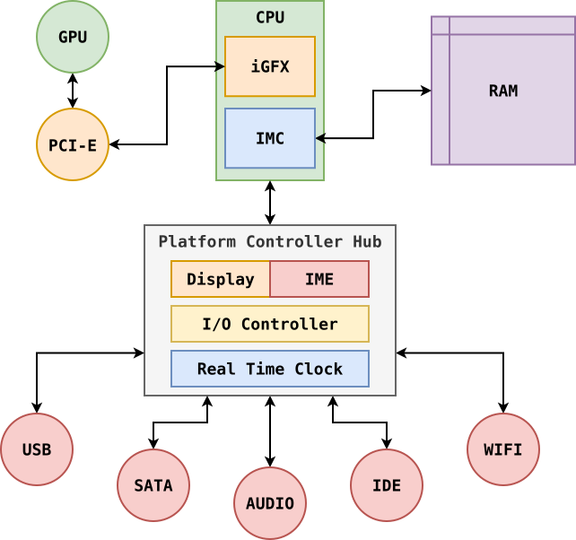
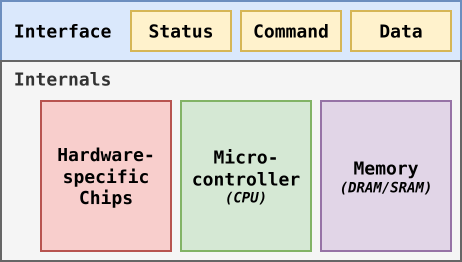
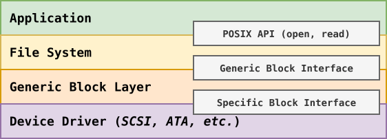
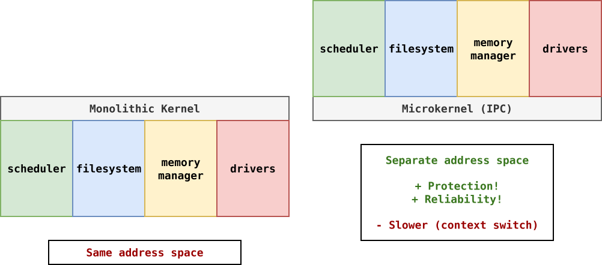
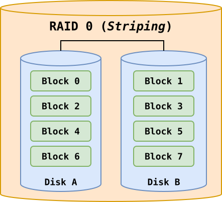
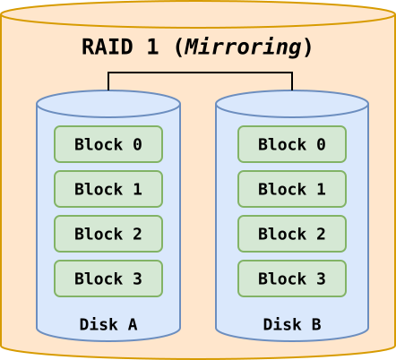
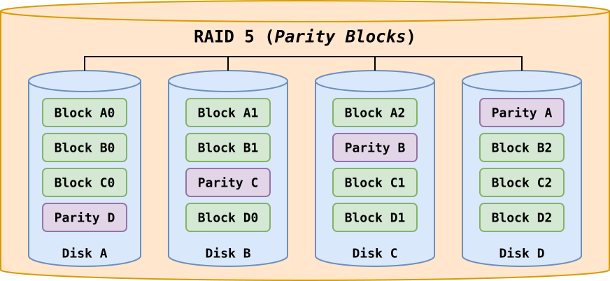
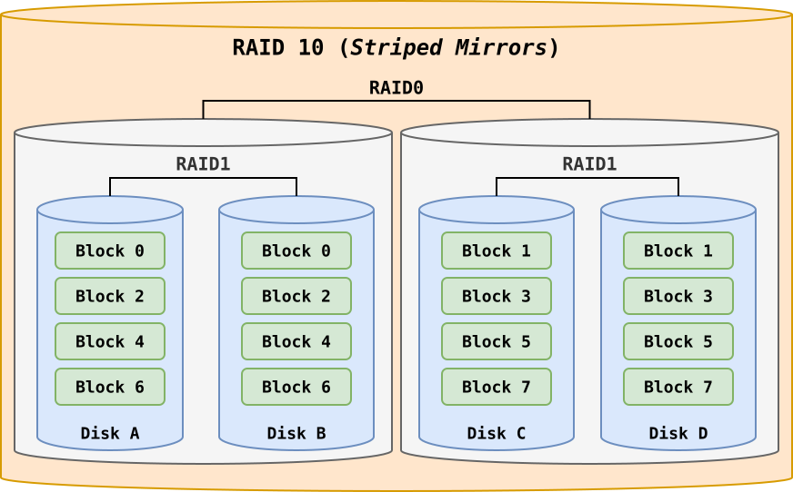

Logistics¶
-
Return Exam 03.
-
Bring hard drives / SSDs to class.
Review: Swapping¶
-
Swap: Provide the issue of infinite RAM by storing pages on disk.
-
Use policy such as LRU to pick which page to evict (timestamps)
-
Use clock algorithm to approximate (sticky notes)
Analogy: Shoes by the door (used most, working set) and in the closet (least recently used).
Review: OS Themes¶
-
Virtualization: Abstracting hardware resources.
- Process (threads) -> CPU
- Address Space -> RAM
- File System -> Disk
Concurrency: Sharing resources safely is difficult.
- Locks / Condition variables
- Semaphores
- Patterns: Producer / Consumer, Monitor, Barrier, Threadpool, Throttling
Persistence: Ensuring data continues to exist.
- Need organization system (shoes)
- How space efficient (stack, flat, etc.)?
- How quickly can I find a pair of shoes?
- How quickly can I access a pair of shoes?
I/O Devices: System Architecture (New)¶

I/O Devices: Memory Mapped I/O¶
The OS interacts with a typical I/O device in the following manner:

# View PCI devices (device registers mapped to physical addresses) $ lspci -vStatus, Command and Data are device registers that are mapped to certain physical memory addresses.
# Wait until device is not busy while STATUS == BUSY: pass # Write data and command to registers Write(DATA, data) Write(COMMAND, command) # Wait until request is done while STATUS == BUSY: passProblem: This is busy waiting!
I/O Devices: Protocol¶
There are multiple methods of transfering data between memory and disk storage:
Method Description Pros Cons Programmed I/O (PIO) OS is directly involved data movement Simple and works Wastes CPU time polling Interrupts OS issues command and later handles interrupt on completion Allows for overlap Can be wasteful due to context switch, interrupt storm Direct Memory Access (DMA) OS programs DMA engine to handle data transfers Allows for overlap Need more hardware, synchronization Analogy: Program manager delegating work.
# View hard drive information on xavier $ hdparm -Ii /dev/sdaI/O Devices: Device Drivers¶
To interface with different devices, the operating system layers subsystems on top of different hardware specific device drivers:

A large portion of kernel code is device drivers such as ahci.c.
I/O Devices: Kernel Space¶

I/O Devices: LKM¶
We can create device drivers as a Loadable Kernel Module, which can be loaded and unloaded at run-time:
Command Action lsmod List kernel modules modinfo Get module information insmod / modprobe Install / load kernel module rmmod Remove kernel module Hard Disks: Geometry¶

Term Description Platter Magnentic surface on which data is stored Spindle Platters are bound together around this component which has a motor Track Data is encoded in these concentric circles Disk Head This is used to read / write data to and from the platter Disk Arm This moves the head to the desired track Pass hard drive around!
Hard Disks: Operations¶
Since platters are constantly spinning, to read and write data we need to move the disk arm so that the disk head is in the appropriate location:
-
We must account for rotational delay (single-track latency)
-
We must account for seek time (moving disk head from one track to another)
-
We must account for settling time (time required to guarantee correct location)
Story: PID control with flywheel.
Hard Disks: Seeking¶
During a hard disk seek operation, we have the following phases:

-
Acceleration: disk arm starts moving
-
Coasting: disk arm moving at full speed
-
Deceleration: disk arm slows down
-
Settling: disk arm positioned over track
Hard Disks: Scheduling¶
As with processes, the operating system can schedule I/O operations:
Name Description Problems Shortest Seek Time First (FIFO) Orders the queue of I/O requests by track and picks the nearest tracks to complete first Starvation Elevator (RDRN) Sweep across the disk and service requests as it moves across the tracks Ignores Rotation Shortest Position Time First Selects the track with the shortest access time, factoring in seek and rotational time Difficult to implement at OS level # See scheduler used for hard drive $ cat /sys/block/sda/queue/schedulermq-deadline: Uses asector-sorted structure(akared-black tree) andFIFOqueue.- Elevator used to be recommended for SSDs.
Solid State Drives: Overview¶
Rather than use slow spinning platters, we can use fast non-volatile NAND memory to store data.
- Faster
-
Energy efficient
-
More expensive
- Unknown reliability

SSDs have a rated write endurance.
Solid State Drives: Garbage Collection¶
Rather than overwrite data, we always write new pages of data and periodically collect any garbage:

Solid State Drives: Wear Leveling¶
Since each individual memory cell has a limited number of write cycles, we must avoid repeated writing to the same area.
-
To support this feature, the device provides a logical block address to the OS and associates these LBAs to physical blocks.
-
The controller can then move data to different physical blocks to spread out the writes while maintaining the logical block address space.
Black Friday: Buy more RAM, Buy a SSD.
Blaze of Fire: Hard Drive Reliability¶

Hard Drives¶
-
Can be slow.
-
Can have limited capacity.
-
Can fail.
RAID: Overview¶
In a RAID, we combine multiple disks into a single array that appears as virtual disk.

- Performance: Faster
- Capacity: Bigger
- Reliability: Tolerate Failure
Combine multiple disks into a virtual disk!
Uses a fail-stop model where disks are in working state or failed state (does not handle silent failures).
RAID: 0 (Striping)¶
We can organize data blocks into rows called stripes and spread these across multiple disks.
Disk A Disk B Disk C Disk D 0 2 4 6 1 3 5 7 8 10 12 14 9 11 13 15 We may organize consecutive blocks into chunks:
-
Smaller chunk size -> more parallelism.
-
Larger chunk size -> less repositioning time.

In RAID 0, we stripe data across multiple disks:
Performance + I/O in parallel Capacity + 100%Reliability - No redundancy RAID: 1 (Mirroring)¶
We can copy or mirror a block across multiple disks to add redundancy:
Disk A Disk B Disk C Disk D 0 0 1 1 2 2 3 3 4 4 5 5 6 6 7 7 -
When reading, we can use either copy.
-
When writing, we must perform writes to each mirror.

In RAID 1, we mirror data across at least two disks:
Performance ~ Read in parallel, but write to multiple disks Capacity - 50%Reliability + Can now lose halfof disks and still operateRAID: 5 (Parity Blocks)¶
Rather than storing a copy of data, we can store a parity block which serves as an error detection code:
C0 C1 C2 C3 Parity 0 0 1 1 XOR(0, 0, 1, 1) = 0 0 1 0 0 XOR(0, 1, 0, 0) = 1 -
We need a parity block for each stripe of data.
-
If we lose a block, we can use the parity block to reconstruct missing portion.
RAID 5 requires at least
3disks, and rotates the parity across each disk in the array.
Performance ~ Read in parallel, but write to multiple disks Capacity ~ At least 66%Reliability ~ Can now lose onedisk and still operateRAID: 10 (Mirroring + Striping)¶

Performance + I/O in parallel Capacity - 50%Reliability + Can now lose halfof disks and still operateRAID: Warnings¶
While RAID is a great way to build faster, bigger, and more reliable storage systems, it doesn't address every problem:
-
RAID recovery time is arduous.
-
RAID doesn't handle disk corruption (or even detects it).
-
RAID is not a backup system.
-